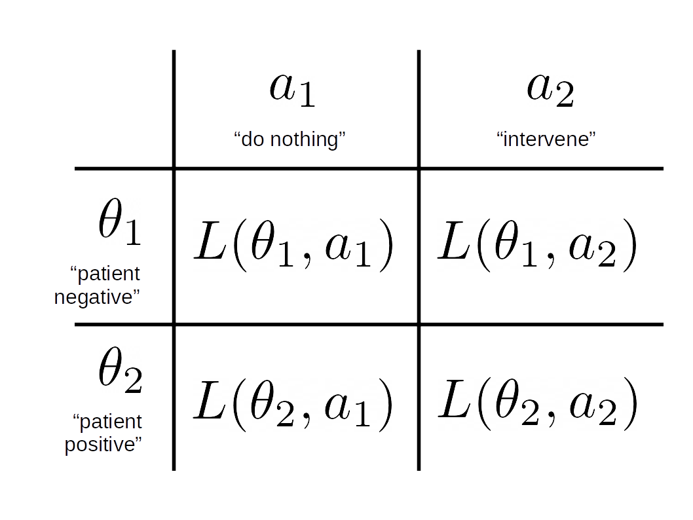

Decisions and Loss Functions - A more clinical focus
In the previous post, loss functions where considered in the context of estimating measures of central tendency for distributions. In this post, I want to look at the computation of loss functions in situations that might arise in a clinical predictive model. This is all textbook stuff – see Further Reading – but I wanted to summarise it in a way I understood when in a year’s time, I wonder what the code does.
I realised that the notation in the last post was sloppy, so for this post, I’ll adopt the conventions in (Berger 1985).
The basic setup is:
- There is a finite set of available actions, \(\mathscr{A} = \{ a_1, a_2, \ldots, a_j \}\) – in the examples that follow, we’ll restrict our attention to a choice between two actions of “do nothing” or “intervene/treat” respectively but there is no loss of generality in assuming this.
- There are uncertain quantities representing “states of the world” \(\Theta = \{ \theta_1, \theta_2, \ldots, \theta_i \}\) about which we can obtain data and that can affect our decision about which action to take. Here, these states will reflect something about a patient.
Then, our task will be to choose the best action from \(\mathscr{A}\) given information about states \(\Theta\).
Information about the states \(\Theta\) will come from a putative predictive model: as in the previous post, measurements (the “input” to the model) for a given patient \(x\) are given to the predictive model \(Y = F(x)\) that delivers scores (the “output”) as realisations of \(Y \in [0,1]\). Importantly, for any \(x\), we can access samples from the posterior distribution \(\pi_{F}(Y|x)\) (rather than relying on a single point prediction, such as the mean of the posterior).
1 Setup
To begin with, assume the simplest case of there being two states \(\Theta = \{ \theta_1, \theta_2 \}\) which correspond to a patient being “negative” or “positive” (respectively) for some event or outcome. Our repetoire of actions is \(\mathscr{A} = \{ a_1, a_2 \}\) representing “do nothing” and “intervene/treat” respectively. This only serves a pedagogical need when developing the ideas, not because it represents a principled or sound modelling decision.
For a single example patient \(x\), the output of the model suggests the they are most likely negative (i.e. the probability mass is concentrated near zero):
library(ggplot2)
library(gridExtra)
library(kableExtra)
library(latex2exp)
library(reshape2)
# globals for presentation
basictheme <- theme_minimal() +
theme(axis.title = element_text(size = 14),
axis.text = element_text(size = 12),
plot.title = element_text(size = rel(1.25), face = "bold", hjust = 0.5 ))set.seed(3141)
range01 <- function(x){(x-min(x))/(max(x)-min(x))}
samples <- range01( rgamma( 2000, shape = 2, scale = 2) )
df <- data.frame( y = samples )
ggplot( df, aes( y ) ) +
geom_density( fill = "#fa9fb5") +
ylab("Density\n") +
xlab("\nScore (Y)") + basictheme
We now require a mapping from the samples \(y \sim \pi_{F}(Y|x)\) to \(\Theta\) because the domain of \(\pi_{F}\) will be the interval \([0,1]\) and to get started, we need to “quantise” to two states.
Define the distribution over states \(\pi_{\Theta}\) as follows:
\[\begin{aligned} \pi_{\Theta}(\theta_{1}) &= \Pr_{\pi_{F}}( Y \leq 0.5 ) \\ \pi_{\Theta}(\theta_{2}) &= \Pr_{\pi_{F}}( Y > 0.5 ) \end{aligned}\]So, we basically histogram the samples into two bins either side of 0.5, representing the probability of a patient being negative (\(\theta_1\)) or positive (\(\theta_2\)). A terrible idea, which we will reverse later.
pdfFromSamples <- function(a, b, delta, samples) {
H <- hist( samples, plot = FALSE, breaks = seq(a, b, by = delta) )
ret <- data.frame(
mids = H$mids,
freq = H$counts
)
ret$P <- ret$freq / sum(ret$freq)
return(ret)
}
pdf.Y <- pdfFromSamples(0,1,delta = 1/2, samples)
pdf.Y$theta <- factor( c(1,2) )
pdf.plot <- ggplot( pdf.Y, aes( x = theta, y = P ) ) +
geom_col( fill = "#fa9fb5" ) +
scale_x_discrete(labels = pdf.Y$theta ) +
xlab(TeX("$\\theta")) +
ylab(TeX('$\\pi(\\theta)')) +
basictheme
print( pdf.plot )
According to our blunt assignment of states to output from the predictive model, the probability the patient is negative is \(\pi_{\Theta}(\theta_{1})\) = 0.921 and positive \(\pi_{\Theta}(\theta_{2})\) = 0.079.
With this setup, (two actions, two states) we can “tabulate” the combinations of actions and states (the Cartesian product: \(\Theta \times \mathscr{A}\)):

In each “cell” or combination \((\theta,a)\) we then assign a loss \(L(\theta,a) \leq 0\) which describes the cost incurred for taking action \(a\) when the state \(\theta\) obtains. Generally, we will adopt the convention that losses represent costs or penalties for actions with respect to states.
2 Example Loss Matrix
Equipped with this toy example we assign losses:
A <- c("a1:<br>do nothing","a2:<br>intervene")
Theta <- c("<b>theta1:</b><br>negative", "<b>theta2:</b><br>positive")
loss.matrix <- matrix( c( 0.0, -0.5,
-1.0, 0 ),
nrow = 2, ncol = 2, byrow = TRUE)
rownames(loss.matrix) <- Theta
colnames(loss.matrix) <- A
knitr::kable( loss.matrix,
format = "html",
align = 'c',
full_width = FALSE,
position = 'c',
escape = FALSE ) %>%
kable_styling(position = "center")|
a1: do nothing |
a2: intervene |
|
|---|---|---|
|
theta1: negative |
0 | -0.5 |
|
theta2: positive |
-1 | 0.0 |
As a use example, assume we decide \(a_2\) (intervene) and the state of the patient turns out to be \(\theta_1\) (negative) we incur a loss of \(L(\theta_1,a_2) = -0.5\) to reflect unnecessary costs of e.g. further investigations, inconvenience to the patient etc. If we select \(a_1\) and the state is \(\theta_1\) (equating to doing nothing and the patient is negative) we incur zero loss because this was an appropriate action given the circumstances.
3 Bayesian Expected Loss
Following (Berger 1985), we define the Bayesian expected loss (BEL) for action \(a_j\) with respect to the discrete distribution \(\pi_{\Theta}\) as \[ \rho(\pi_{\Theta},a_j) = \mathbb{E}_{\pi_{\Theta}} \left[ L(\theta,a_j\right] = \sum_{i}L(\theta_i,a_j)\pi_{\Theta}(\theta_i) \]
# Bayesian expected loss (BEL)
BEL <- function( a, p.pi, loss.matrix ) {
sum( loss.matrix[ , a ] * p.pi )
}
# compute BEL for each action a:
rho.A <- data.frame(
A = factor(c("a1","a2")),
rho = rep(NA,2)
)
# for each action
for( j in 1:2 ) {
rho.A$rho[j] <- BEL( j, pdf.Y$P, loss.matrix )
}
bel.plot <- ggplot( rho.A, aes(x = A, y = rho) ) +
geom_col( fill = "#d6604d" ) +
basictheme
grid.arrange( pdf.plot, bel.plot, nrow = 1, ncol = 2 )
Note that the upper bound of the BEL is zero.
4 Conditional Bayes Decision Principal
Having established the BEL for each action, the conditional bayes decision principle (CBD) for deciding on an action (Berger 1985) is:
- choose \(a_{j} \in \mathscr{A}\) such that \(a_j\) minimises the BEL : \(\underset{j}{\mathrm{arg\,max}} \; \rho( \pi_{\Theta}, a_j )\)
In code: the resulting vector for \(\rho( \pi_{\Theta}, a )\)
knitr::kable( rho.A,
format = "html",
align = 'c',
full_width = FALSE,
position = 'c',
escape = FALSE ) %>%
kable_styling(position = "center")| A | rho |
|---|---|
| a1 | -0.0790 |
| a2 | -0.4605 |
And the action that minimises the BEL:
print( min.bel.CBD <- which.max( rho.A$rho ) )## [1] 1In the example above, we find the action 1 (i.e. \(a_1\) = “do nothing”) minimises the BEL. This fits with our intuition given the patient is most likely negative: \(\pi_{\Theta}(\theta_1) > \pi_{\Theta}(\theta_1)\).
5 Developing the Loss Function
Consider a different patient where the posterior distribution \(\pi_{F}(Y|x)\), the output of the predictive model, looks like:
samples <- range01( c(rnorm( 1000, mean = 0, sd = 2 ), rnorm( 1000, mean = 10, sd = 3) ) )
df <- data.frame( y = samples )
ggplot( df, aes( y ) ) +
geom_density( fill = "#fa9fb5") +
ylab("Density\n") +
xlab("\nScore (Y)") + basictheme In this example, there’s uncertainty about the patient being negative or positive.
In this example, there’s uncertainty about the patient being negative or positive.
This time, we’ll quantise into three equal-sized intervals over the range \([0,1]\) (again, an unprincipled decision made only for demonstration) and map to three states:
pdf.Y <- pdfFromSamples(0,1,delta=1/3,samples)
pdf.Y$theta <- factor( seq(1,3,by=1) )
pdf.plot <- ggplot( pdf.Y, aes( x = theta, y = P ) ) +
geom_col( fill = "#fa9fb5" ) +
scale_x_discrete(labels = pdf.Y$theta ) +
xlab(TeX("$\\theta")) +
ylab(TeX('$\\pi(\\theta)')) +
basictheme
print( pdf.plot )
The loss matrix will now be a \(3 \times 2\) matrix:
A <- c("a1:<br>do nothing","a2:<br>intervene")
Theta <- c("<b>theta1:</b><br>negative",
"<b>theta2:</b><br>equivocal",
"<b>theta3:</b><br>positive")
loss.matrix <- matrix( c( 0.0, -0.5,
-0.5, -0.2,
-1.0, 0 ),
nrow = 3, ncol = 2, byrow = TRUE)
rownames(loss.matrix) <- Theta
colnames(loss.matrix) <- A
knitr::kable( loss.matrix,
format = "html",
align = 'c',
full_width = FALSE,
position = 'c',
escape = FALSE ) %>%
kable_styling(position = "center")|
a1: do nothing |
a2: intervene |
|
|---|---|---|
|
theta1: negative |
0.0 | -0.5 |
|
theta2: equivocal |
-0.5 | -0.2 |
|
theta3: positive |
-1.0 | 0.0 |
Bearing in mind that states are uncertain, the logic behind this loss matrix is as follows:
For \(a_1\) (do nothing) : no cost is incurred if the patient is likely negative (\(\theta_1\)). If the patient is most likely positive (\(\theta_3\)) and we do nothing, this is evidently the wrong decision and we incur the maximum penalty of -1.0. If there is some equivocation \((\theta_2\)) – we penalise by half the maximum cost to discourage doing nothing (equating to loss aversion)
For \(a_2\) (intervene) : for \(\theta_1\) we incur a cost (-0.5) for intervening when unnecessary. Naturally, for \(\theta_3\), the correct thing to do is intervene so this has no penalty associated. For the equivocal case, \(\theta_2\), we should certainly not ignore these cases but simply intervening (i.e. with zero penalty) is inappropriate. So we incur a small penalty (-0.2) to nudge us away from intervening as the default.
Notice that in designing the loss matrix, we are trying to capture domain knowledge about the deployment of the model – for example, the loss attached to doing nothing (when there is equivocation about the negative/positive state of the patient) pushes us to be cautious and intervene.
Let’s look at the resulting BEL:
# compute BEL for each action a:
rho.A <- data.frame(
A = factor(c("a1","a2")),
rho = rep(NA,2)
)
# for each action
for( j in 1:2 ) {
rho.A$rho[j] <- BEL( j, pdf.Y$P, loss.matrix )
}
bel.plot <- ggplot( rho.A, aes(x = A, y = rho) ) +
geom_col( fill = "#d6604d" ) +
basictheme
grid.arrange( pdf.plot, bel.plot, nrow = 1, ncol = 2 )
knitr::kable( rho.A,
format = "html",
align = 'c',
full_width = FALSE,
position = 'c',
escape = FALSE ) %>%
kable_styling(position = "center")| A | rho |
|---|---|
| a1 | -0.35125 |
| a2 | -0.30530 |
print( min.bel.CBD <- which.max( rho.A$rho ) )## [1] 2The action that minimises \(\rho(\pi_{\Theta},a)\) is \(a_2\) – as can be seen, the probability mass for \(\theta_2\) and \(\theta_3\) (and the associated losses) is driving the decision to intervene i.e. be cautious.
We can continue introducing more and more granularity in quantising the posterior predictions \(\pi_{F}(Y|x)\) to arrive at mappings to states \(\Theta\) and then specifying individual losses in the corresponding rows of the loss matrix. Instead, we’ll specify a loss function (although for coding convenience, we’ll continue with a matrix representation).
Sigmoid <- function( x, A, B, m, s ) {
# x = vector of values
# A = height of sigmoid
# B = translation on y axis
# m = value of x for which Sigmoid() = half max value
# s = steepness of linear component
exp.x <- exp( -(x-m)/s )
return(
( A + B * (1+exp.x) ) / (1+exp.x)
)
}
# plots to compare the quantised states to a more fine-grained version
pdf.Y1 <- pdfFromSamples(0, 1, delta= 1/50, samples)
pdf.plot.Y1 <- ggplot( pdf.Y1, aes( x = mids, y = P ) ) +
geom_col( fill = "#fa9fb5" ) +
xlab(TeX("$\\theta")) +
ylab(TeX('$\\pi(\\theta)')) +
basictheme
pdf.Y2 <- pdfFromSamples(0, 1, delta= 1/3, samples)
pdf.Y2$Theta <- factor(c("theta1","theta2","theta3"))
pdf.plot.Y2 <- ggplot( pdf.Y2, aes( x = Theta, y = P ) ) +
geom_col( fill = "#fa9fb5" ) +
scale_x_discrete(labels = pdf.Y2$theta ) +
xlab(TeX("$\\theta")) +
ylab(TeX('$\\pi(\\theta)')) +
basictheme
# loss functions for a1 and a2
loss.fun.a1 <- Sigmoid(pdf.Y1$mids, A = -1.0, B = 0, m = 0.5, s = 0.15 )
loss.fun.a2 <- Sigmoid(pdf.Y1$mids, A = 0.5, B = -0.5, m = 0.3, s = 0.08 )
# build a tabular version of loss function
loss.fun <- data.frame( Theta = pdf.Y1$mids,
L.a1 = loss.fun.a1,
L.a2 = loss.fun.a2
)
# show the loss function and 3 state quantised loss matrix
loss.fun.plot <- ggplot( loss.fun, aes( x = Theta ) ) +
geom_line( aes( y = L.a1 ), colour = "#fc8d59", size = 1) +
annotate( "label", x = 0.9, y = -0.75, label = "a1" ) +
geom_line( aes( y = L.a2 ), colour = "#91bfdb", size = 1 ) +
annotate( "label", x = 0.9, y = -0.15, label = "a2" ) +
ylab("Loss") +
xlab("\nTheta") +
basictheme
df.loss.matrix <- data.frame( Theta = factor( c("theta1","theta2","theta3") ),
L.a1 = loss.matrix[,1],
L.a2 = loss.matrix[,2]
)
loss.matrix.plot <- ggplot( df.loss.matrix ) +
geom_line( aes( x = Theta, y = L.a1, group = 1),
colour = "#fc8d59", size = 1) +
geom_point( aes( x = Theta, y = L.a1, group = 1),
colour = "#fc8d59", size = 4) +
annotate( "label",
x = 2.8, y = -0.7, label = "a1" ) +
geom_line( aes( x = Theta, y = L.a2, group= 1),
colour = "#91bfdb", size = 1.5 ) +
geom_point( aes( x = Theta, y = L.a2, group= 1),
colour = "#91bfdb", size = 4 ) +
annotate( "label",
x = 2.8, y = -0.2, label = "a2" ) +
ylab("Loss") +
xlab("\nTheta") +
basictheme
grid.arrange( pdf.plot.Y2, pdf.plot.Y1,
loss.matrix.plot, loss.fun.plot,
nrow = 2, ncol = 2 )
In the figure above, we show the three-state loss matrix underneath the distribution \(\pi_{\Theta}\) (the lines are to emphasise the trend in losses as we proceed from likely negative through positive). On the right, a finer-grained representation of the distribution \(\pi_{\Theta} \approx \pi_{F}(Y|x)\) with a sigmoid loss function over \(\Theta\) interpolating between the points in the loss matrix at the extremes (negative, positive) and midpoint (equivocal). Now, we can effectively use the whole of the posterior \(\pi_{F}(Y|x)\) more directly:
# the loss function x probability
pdf.Y1$L.a1 <- pdf.Y1$P * loss.fun$L.a1
pdf.Y1$L.a2 <- pdf.Y1$P * loss.fun$L.a2
# product of the posterior and loss function
loss.fun.plot2 <- ggplot( pdf.Y1, aes( x = mids ) ) +
geom_line( aes( y = L.a1 ), colour = "#fc8d59", size = 1.5) +
#annotate( "label", x = 0.9, y = -0.75, label = "a1" ) +
geom_line( aes( y = L.a2 ), colour = "#91bfdb", size = 1.5 ) +
#annotate( "label", x = 0.9, y = -0.15, label = "a2" ) +
ylab("Loss") +
xlab("\nTheta") +
basictheme
## The actual BEL
# we need a matrix representation of the loss function
loss.fun.matrix <- as.matrix( loss.fun[,2:3] )
colnames( loss.fun.matrix ) <- c("a1","a2")
# compute BEL for each action a:
rho.A <- data.frame(
A = factor(c("a1","a2")),
rho = rep(NA,2)
)
# for each action
for( j in 1:2 ) {
rho.A$rho[j] <- BEL( j, pdf.Y1$P, loss.fun.matrix )
}
bel.plot <- ggplot( rho.A, aes(x = A, y = rho) ) +
geom_col( fill = "#d6604d" ) +
basictheme
grid.arrange( pdf.plot.Y1, loss.fun.plot2, bel.plot, ncol = 2, nrow = 2)
Above, the top-left panel shows a finer-grained distribution function \(\pi_{\Theta}\) and the top-right panel shows the loss function for \(a_1\) and \(a_2\) weighted by \(\pi_{\Theta} \approx \pi_{F}(Y|x)\) – rather than the sum for each action as in \(\rho(\theta, a)\). This exposes that the Bayesian expected loss of an action is the integral over states (equivalently, the sum for discrete distributions) of the product of the loss function for an action in a certain state and the probability of that state. The bottom-left panel shows the resulting BEL where, as expected, \(a2\) minimises \(\rho(\theta,a)\).
6 Further Reading
If I were to try this again (rather than trying to piece together an understanding from wikipedia), I would proceed in this order:
- Start with (Savage 1951) for foundations/first principles and tutorial approach.
- First four chapters of (Berger 1985) for a really clear exposition of the core ideas.
- For decision theory in point estimation from the perspective of sciences concerned with prediction and forecasting: (Gneiting 2011) provides a comprehensive review
- Risk/decision theory for classification Chapter 2 of (Duda, Hart, and Stork 2012) and Chapter 1.5 of (Bishop 2006).
- Foundations in Bayesian principles more generally: Chapter 2 and Appendix B of (Bernardo and Smith 2009)
References
Dan W Joyce
I’m interested in how principles from computation can be used to understand things like clinical state, trajectories and how to augment clinical decision making using data, multivariate statistics and (cautiously) AI and ML.